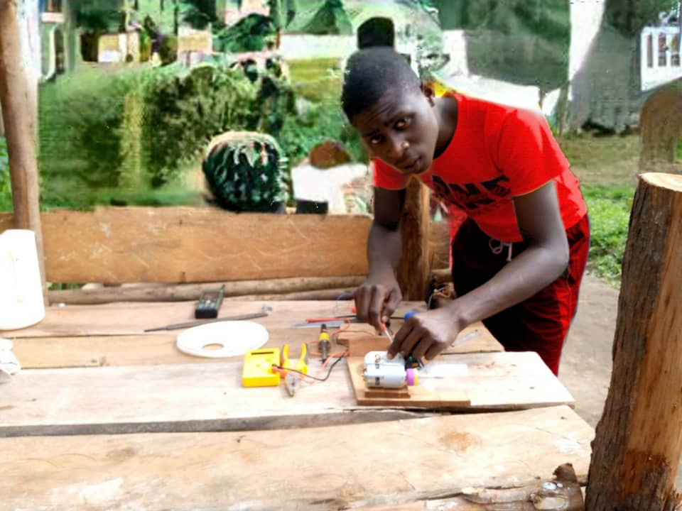

Catholic based however we welcome,honour and respect all religions
MY TOMORROW BEGGINGS TODAY
hi guys am sserunkuma Joel,
I'm a student of queen of matyrs high school. I love ICT I'm interested in codding and programming
especially in website building
and Mobile application deverment. I'm studying various programming languages i.e Python ,Java, JavaScript ,HTML, CSS and c++ .
I'm highly passioned in electronics and building projects conserning it
.

Education before joining Queen of matters I was doing my studies at stand tall training center where I gained some skills. now currently I'm studying at Queen of matyrs high school where I gained more skills and experiences I engaged in Web development course at CODELIBER ACADDEMY platform. where I acquired my qualification certificate in web development for now I'm good at front end development. I study electronic I'm ohmify.com
Achievements in 2022 I launched my first application called joel chats Uganda. at our school i generated a group called the invetion team which is aimed at promoting creativity and innovative mindset amount students. I started it to share and expand my creativity and knowledge that I have to my fellow students who have interest and passion in electronics and other matters conserning technology and science I have made built various electronics projects at the school I engineered the electronic bell and the table lamp and others I finished my web development at CODELIBER Academy for now I'm good at fron end development
Mission and Ambissions I have a dream of going a broad for further studies in the engineering like robotics , software engineering and electronic engineering. I have a dream of becoming an electronic engineer with ability of building and developing electronics. I want also become a software engineer a programmer with ability of generating and designing software ,programs and applictions I have a dream of starting up at company called joel robotics and electroni cybernetics that will aim at developing electronics and generating programs in Uganda
Thank you for visiting us on this webplatform
Queen of martrys high school is a catholic based that was founded by the late kalooli kiwanuka
we think you have received the best if you have any inquiries you can please contact
on our contact us page.
OFFICE LINES:0704402926 , 0772402926
Located at KIWOLOGOMA-KIRA
queenofmatryshighschool@gmail.com
MY TOMORROW BEGINGS TODAY